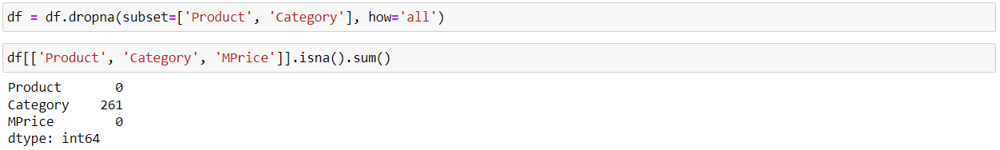
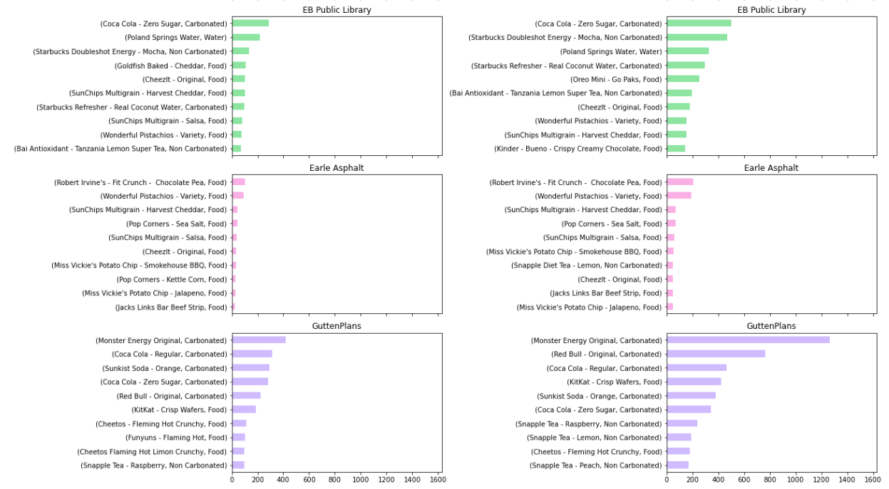

Exploratory Data Analysis for optimizing product placement in different locations
Data Source
2022 vending machine sales data from 4 different locations in Central New Jersey.
Table of Contents
1. Business Problem
The business wants to optimize product placement in vending machines to enhance customer satisfaction, increase sales, and improve overall profitability.
2. Objectives
The objective of this exploratory data analysis (EDA) is to gain insights into consumer behavior, preferences, and trends in different vending machine locations across Central New Jersey.
3. Methodology
The analysis in this report was conducted using Jupyter Notebook and implemented in Python.
- Libraries used: Pandas | NumPy | Matplotlib | Seaborn
- Techniques/Models applied: Exploratory Data Analysis | Frequency Analysis | Time Series Analysis | Comparative Analysis | Data Visualization
4. Constraints & Data Augmentation Suggestions
The current dataset lacks inventory and item profitability information. Including these details would enhance supply optimization, reducing stockouts and excess inventory costs. Profitability data would prioritize items benefiting revenue.
With the provided data, we assume that the company restocks when needed and conducts an analysis of sales and quantity rather than profit analysis.
5. Data Analysis
The following outline provides a concise summary of the analysis, highlighting the essential steps and key findings. To view the complete code, please click here for ipynb file.
5-1 Data Preprocessing
- Import libraries
- Read and view the first 5 rows of the dataset
- Check the size of the data and the data types of all columns
- Convert 'TransDate' and 'Prcd Date' to DateTime format
- Check if there is any duplicates
- Check & handle NA values
- Summary statistics of numeric variables
- Explore categorical variables
- Create 'month' and 'weekday' columns to facilitate time series analysis
Given that both 'Product' and 'Category' columns contain missing values, and considering their interrelation, we will drop rows where both columns have missing values. Furthermore, if one of these columns has a valid value while the other is missing, we will assign the missing value based on a relevant and logical relationship.
Most missing Category entries are for products in the 'Food' category, with exceptions like 'Canada Dry' in 'Carbonated' and 'Starbucks Coffee' in 'Non-Carbonated'. We will address beverages and assign the rest to 'Food'.
The descriptive summaries of the real columns (Coil, Price, Qty) closely resemble those of the corresponding mapping columns. To verify, we will compare the values in the real columns to those in the mapping columns for identicalness.
5-2 Vending Machine Sales Overview
- The sales overview (LineTotal = Total Sales)
- Find out the sales trend
- Find out the total sales by machine
- Find out the total sales by location
- Find out the monthly sales by location
- Find out the traffic trends in each location


Note:
Total sales peaked in July. Given that we only have one year of records, it is challenging to ascertain whether there is a seasonal reason for this peak.
Note:
The sales trends in GuttenPlans and Brunswick Sq Mall align with the overall sales trend, both of which peaked in July.
Note:
Brunswick Sq Mall experiences its highest traffic during weekends, particularly on Saturdays. In contrast, EB Public Library observes higher traffic on weekdays compared to weekends. Earle Asphalt, a construction engineering firm operating five days a week, exhibits nearly equivalent weekday traffic. As for Gutten Plans, a frozen dough specialist company, its traffic follows a normal distribution from Monday to Saturday.
5-3 Transaction Overview
- Transaction overview by location
- Find out product count per transaction
- Find out the distribution of payment type
Note:
Earle Asphalt has the lowest transaction amount, at $1.83, among the four locations, while EB Public Library has the highest, at $2.29.
Note:
The majority of individuals only bought a single product per transaction.
Note:
Overall, 65% of the transactions are paid by cash. GuttenPlans even has a higher proportion of customers paying by cash, at 78%. Therefore, changes to the vending machine should be planned carefully in order to meet the needs of this customer base.
5-4 Category Analysis
- Find out the sales and quantity sold trends by category
- Identify the range of products within each category and location
- Find out the distributions of sales in each location
- Find out the distributions of quantity sold in each location
- Identify the price range in each category
Note:
Among all categories, food appears to be more popular across all locations. EB Public Library, in particular, exhibits a notably high demand for food compared to the other locations. GuttenPlans experiences high demand in both the food and carbonated drink categories, while there is no demand for water (which might indicate that this location does not offer water).
Note:
As GuttenPlans has the highest sales among all and has a lower variety of products in the transaction records, this suggests that consumers at GuttenPlans have more centralized demands. In contrast, Brunswick Sq Mall and EB Public Library have more diverse demands.
Note:
The compositions of demand categories are very different among the four locations. While most locations are dominated by the food category, GuttenPlans also has a significant competing demand for carbonated products. Additionally, Brunswick Sq Mall has a unique 20% demand for water, which is not common in other locations.
5-5 Product Analysis
- Find the top 10 products 
- Find the top 10 products' trends in each location
Note:
Poland Springs Water is clearly the top-demanding product at Brunswick Sq Mall and is the only product in the water category that made it into the top 10 demands.
Note:
Poland Springs Water is the top demanding product at EB Public Library aside from Coca Cola-Zero Sugar. The observed 0 transactions in August might have been due to Poland Spring Water being out of stock. During the same month, there was an increased demand for Starbucks Refresher-Real Coconut Water. This suggests that Starbucks Refresher-Real Coconut Water is a substitute for Poland Springs Water.
Note:
Aside from Robert Irvine's-Fit Crunch-Chocolate Pea and Wonderful Pistachinos-variety, there are many 0 transactions across the cross-tabulation. This may indicate diverse demand at Earle Asphalt or inconsistent allocation of the product mix. The peak demand for Pop Corners-Sea Salt in November should be investigated further to understand the cause of the sudden increase.
Note:
The supply of Coca-Cola Regular and Coca-Cola Zero Sugar should be identified to determine whether they are substitutes or have their own separate demands.
5-6 Price Sensitivity Analysis
- Examine the relationship between price and quantity
Note:
Consumers at EB Public Library have the highest purchasing ability, with the highest product cost being $5, followed by Brunswick Sq Mall at $4, and then GuttenPlans and Earle Asphalt at $3.5 and $3, respectively.
- Examine the relationship between price and quantity in each category
Note:
With the exception of EB Public Library, consumers at the other locations did not purchase food items priced over $3.
Note:
EB Public Library has a high demand for a $3.5 non-carbonated product, specifically Starbucks Doubleshot Energy-Mocha, while demand for non-carbonated products at other locations is around $2.5.
6. Insights & Recommendations
- Brunswick Sq Mall ranked second in sales among the 4 locations. The top product at the mall is Poland Springs Water, and the Water category accounts for 20% of sales. However, sales in the water category have dropped in Q4, and the root cause of the decrease needs to be investigated.
- EB Public Library possesses a sales record near the highest in all locations, and it also has the highest amount spent per transaction. This location offers a wider range of products with relatively low price sensitivity.It is recommended to introduce more profitable or high-value products at this location to maximize profit.
- Earle Asphalt has the lowest sales and traffic, and it also offers the most limited products priced under $3, which might be the reason for the lower sales.Introducing a greater variety of products to examine whether there is unmet demand in this area might help increase sales.
- GuttenPlans has the highest sales among all locations, with nearly 80% of transactions being paid in cash, and the demand is highly centralized.Products in high demand should undergo inventory prediction to ensure that all demands are met. One thing to note is that there are no transactions in the water category. Further investigation is needed to determine whether there is no demand for water products or if there is a supply issue in this category.